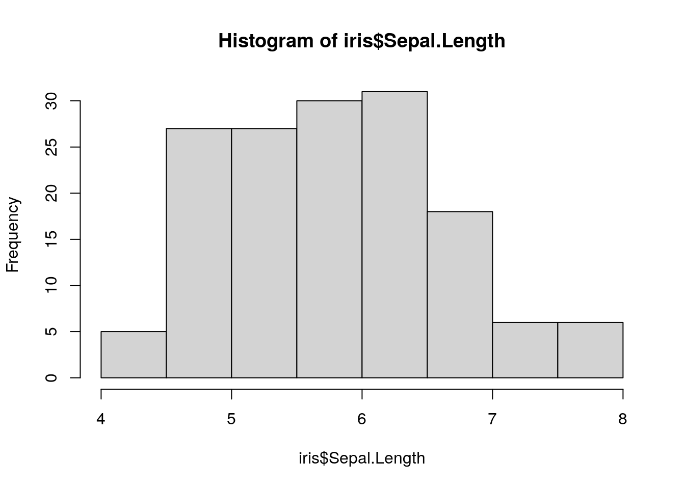

Chapter 3 Topic of Section
You can write all your text in sections like this!
3.1 Subtopic
Here’s a subheading and some text in this subsection!
3.1.1 Code examples
You can demonstrate code like this:
output_dir <- file.path("resources", "code_output")
if (!dir.exists(output_dir)) {
dir.create(output_dir)
}And make plots too:

You can also save these plots to file:
## $breaks
## [1] 4.0 4.5 5.0 5.5 6.0 6.5 7.0 7.5 8.0
##
## $counts
## [1] 5 27 27 30 31 18 6 6
##
## $density
## [1] 0.06666667 0.36000000 0.36000000 0.40000000 0.41333333 0.24000000 0.08000000
## [8] 0.08000000
##
## $mids
## [1] 4.25 4.75 5.25 5.75 6.25 6.75 7.25 7.75
##
## $xname
## [1] "iris$Sepal.Length"
##
## $equidist
## [1] TRUE
##
## attr(,"class")
## [1] "histogram"## png
## 23.1.2 Image example
How to include a Google slide. It’s simplest to use the ottrpal package:

But if you have the slide or some other image locally downloaded you can also use html like this:
3.1.3 Video examples
To show videos in your course, you can use markdown syntax like this:
Alternatively, you can use knitr::include_url() like this:
Note that we are using echo=FALSE in the code chunk because we don’t want the code part of this to show up.
If you are unfamiliar with how R Markdown code chunks work, read this.
OR this works:
3.1.5 Links to websites
Examples of including a website link.
This works:
OR this:
OR this:
3.1.6 Citation examples
We can put citations at the end of a sentence like this (Allaire et al. 2021). Or multiple citations Xie, Allaire, and Grolemund (2018).
but they need a ; separator (Allaire et al. 2021; Xie, Allaire, and Grolemund 2018).
In text, we can put citations like this Allaire et al. (2021).
3.1.7 FYI boxes
Please click on the subsection headers in the left hand
navigation bar (e.g., 2.1, 4.3) a second time to expand the
table of contents and enable the scroll_highlight feature
(see more).
3.2 Print out session info
You should print out session info when you have code for reproducibility purposes.
## ─ Session info ───────────────────────────────────────────────────────────────
## setting value
## version R version 4.3.2 (2023-10-31)
## os Ubuntu 22.04.4 LTS
## system x86_64, linux-gnu
## ui X11
## language (EN)
## collate en_US.UTF-8
## ctype en_US.UTF-8
## tz Etc/UTC
## date 2025-05-05
## pandoc 3.1.1 @ /usr/local/bin/ (via rmarkdown)
##
## ─ Packages ───────────────────────────────────────────────────────────────────
## package * version date (UTC) lib source
## askpass 1.2.0 2023-09-03 [1] RSPM (R 4.3.0)
## bookdown 0.41 2024-10-16 [1] CRAN (R 4.3.2)
## bslib 0.6.1 2023-11-28 [1] RSPM (R 4.3.0)
## cachem 1.0.8 2023-05-01 [1] RSPM (R 4.3.0)
## chromote 0.3.1 2024-08-30 [1] CRAN (R 4.3.2)
## cli 3.6.2 2023-12-11 [1] RSPM (R 4.3.0)
## curl 5.2.0 2023-12-08 [1] RSPM (R 4.3.0)
## devtools 2.4.5 2022-10-11 [1] RSPM (R 4.3.0)
## digest 0.6.34 2024-01-11 [1] RSPM (R 4.3.0)
## dplyr 1.1.4 2023-11-17 [1] RSPM (R 4.3.0)
## ellipsis 0.3.2 2021-04-29 [1] RSPM (R 4.3.0)
## evaluate 0.23 2023-11-01 [1] RSPM (R 4.3.0)
## fansi 1.0.6 2023-12-08 [1] RSPM (R 4.3.0)
## fastmap 1.1.1 2023-02-24 [1] RSPM (R 4.3.0)
## fs 1.6.3 2023-07-20 [1] RSPM (R 4.3.0)
## generics 0.1.3 2022-07-05 [1] RSPM (R 4.3.0)
## glue 1.7.0 2024-01-09 [1] RSPM (R 4.3.0)
## highr 0.11 2024-05-26 [1] CRAN (R 4.3.2)
## hms 1.1.3 2023-03-21 [1] RSPM (R 4.3.0)
## htmltools 0.5.7 2023-11-03 [1] RSPM (R 4.3.0)
## htmlwidgets 1.6.4 2023-12-06 [1] RSPM (R 4.3.0)
## httpuv 1.6.14 2024-01-26 [1] RSPM (R 4.3.0)
## httr 1.4.7 2023-08-15 [1] RSPM (R 4.3.0)
## janitor 2.2.0 2023-02-02 [1] RSPM (R 4.3.0)
## jquerylib 0.1.4 2021-04-26 [1] RSPM (R 4.3.0)
## jsonlite 1.8.8 2023-12-04 [1] RSPM (R 4.3.0)
## knitr 1.48 2024-07-07 [1] CRAN (R 4.3.2)
## later 1.3.2 2023-12-06 [1] RSPM (R 4.3.0)
## lifecycle 1.0.4 2023-11-07 [1] RSPM (R 4.3.0)
## lubridate 1.9.3 2023-09-27 [1] RSPM (R 4.3.0)
## magrittr * 2.0.3 2022-03-30 [1] RSPM (R 4.3.0)
## memoise 2.0.1 2021-11-26 [1] RSPM (R 4.3.0)
## mime 0.12 2021-09-28 [1] RSPM (R 4.3.0)
## miniUI 0.1.1.1 2018-05-18 [1] RSPM (R 4.3.0)
## openssl 2.1.1 2023-09-25 [1] RSPM (R 4.3.0)
## ottrpal 1.3.0 2024-10-23 [1] Github (jhudsl/ottrpal@2e19782)
## pillar 1.9.0 2023-03-22 [1] RSPM (R 4.3.0)
## pkgbuild 1.4.3 2023-12-10 [1] RSPM (R 4.3.0)
## pkgconfig 2.0.3 2019-09-22 [1] RSPM (R 4.3.0)
## pkgload 1.3.4 2024-01-16 [1] RSPM (R 4.3.0)
## png 0.1-8 2022-11-29 [1] CRAN (R 4.3.2)
## processx 3.8.3 2023-12-10 [1] RSPM (R 4.3.0)
## profvis 0.3.8 2023-05-02 [1] RSPM (R 4.3.0)
## promises 1.2.1 2023-08-10 [1] RSPM (R 4.3.0)
## ps 1.7.6 2024-01-18 [1] RSPM (R 4.3.0)
## purrr 1.0.2 2023-08-10 [1] RSPM (R 4.3.0)
## R6 2.5.1 2021-08-19 [1] RSPM (R 4.3.0)
## Rcpp 1.0.12 2024-01-09 [1] RSPM (R 4.3.0)
## readr 2.1.5 2024-01-10 [1] RSPM (R 4.3.0)
## remotes 2.4.2.1 2023-07-18 [1] RSPM (R 4.3.0)
## rlang 1.1.4 2024-06-04 [1] CRAN (R 4.3.2)
## rmarkdown 2.25 2023-09-18 [1] RSPM (R 4.3.0)
## rprojroot 2.0.4 2023-11-05 [1] CRAN (R 4.3.2)
## sass 0.4.8 2023-12-06 [1] RSPM (R 4.3.0)
## sessioninfo 1.2.2 2021-12-06 [1] RSPM (R 4.3.0)
## shiny 1.8.0 2023-11-17 [1] RSPM (R 4.3.0)
## snakecase 0.11.1 2023-08-27 [1] RSPM (R 4.3.0)
## stringi 1.8.3 2023-12-11 [1] RSPM (R 4.3.0)
## stringr 1.5.1 2023-11-14 [1] RSPM (R 4.3.0)
## tibble 3.2.1 2023-03-20 [1] CRAN (R 4.3.2)
## tidyselect 1.2.0 2022-10-10 [1] RSPM (R 4.3.0)
## timechange 0.3.0 2024-01-18 [1] RSPM (R 4.3.0)
## tzdb 0.4.0 2023-05-12 [1] RSPM (R 4.3.0)
## urlchecker 1.0.1 2021-11-30 [1] RSPM (R 4.3.0)
## usethis 2.2.3 2024-02-19 [1] RSPM (R 4.3.0)
## utf8 1.2.4 2023-10-22 [1] RSPM (R 4.3.0)
## vctrs 0.6.5 2023-12-01 [1] RSPM (R 4.3.0)
## webshot2 0.1.1 2023-08-11 [1] CRAN (R 4.3.2)
## websocket 1.4.2 2024-07-22 [1] CRAN (R 4.3.2)
## xfun 0.48 2024-10-03 [1] CRAN (R 4.3.2)
## xml2 1.3.6 2023-12-04 [1] RSPM (R 4.3.0)
## xtable 1.8-4 2019-04-21 [1] RSPM (R 4.3.0)
## yaml 2.3.8 2023-12-11 [1] RSPM (R 4.3.0)
##
## [1] /usr/local/lib/R/site-library
## [2] /usr/local/lib/R/library
##
## ──────────────────────────────────────────────────────────────────────────────